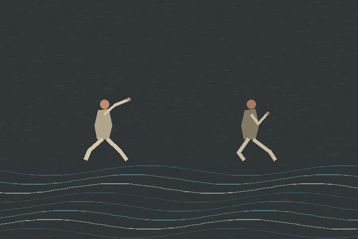

Turnwater · Dance film · 2026

The Pause Arrives
Two dancers cross the same stretch of current without touching. One carries a reach; the other answers with a pause and a changed weight.
Drawn frame by frame. The dancers and stage are invented.
A finished work in the ongoing Common Water sequence; not a depiction of a particular Tonle Sap community or fishing practice.